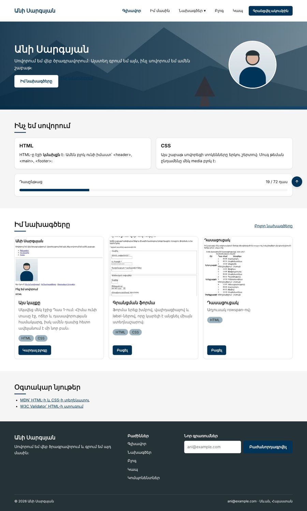

Տնային աշխատանք · HTML Դաս 19 · մինի-նախագիծ
Բոլոր գույները դառնում են երկու շերտի տոկեններ, կոճակը՝ պարամետրերով, իսկ կայքը ստանում է մուգ թեմա մեկ media բլոկով։
Օգտագործիր միայն Դաս 01–19-ը։ Թեման հետևում է համակարգի կարգավորմանը։ Ձեռքով անջատիչը բոլոր էջերում պահելու համար պետք է JavaScript։
Լուսավոր թեմայում կայքը գրեթե նույնն է, բայց CSS-ի ներսում փոխվել է ամեն ինչ․ բոլոր գույները երկու շերտի տոկեններ են։ Դրա շնորհիվ մուգ թեման ընդամենը մեկ media բլոկ է։

Սկսիր Դաս 18-ի քո կայքից։ Եթե այն չունես, վերցրու Դաս 18-ի օրինակը։
Որոնիր main.css-ում # նշանը :root-ից դուրս։ Գրիր թիվը․ դա քո ելակետն է։ Դաս 17-ի կոճակներում և պիտակներում դրանք մի քանիսն են։
/* Շերտ 1․ գունապնակ — ԻՆՉ գույներ ունենք */
--navy-700: #003459;
--white: #ffffff;
/* Շերտ 2․ իմաստ — ԻՆՉ դեր է կատարում */
--accent: var(--navy-700);
--surface: var(--white);
--on-accent: var(--white);Կոմպոնենտները օգտագործում են միայն երկրորդ շերտը։ --secondary-ը դառնում է --accent, --muted-ը՝ --text-muted, --light-ը՝ --accent-light։ Ավարտելուց հետո :root-ից դուրս HEX չպետք է մնա։
.btn {
--btn-bg: var(--accent);
--btn-color: var(--on-accent);
--btn-border: transparent;
background: var(--btn-bg);
color: var(--btn-color);
border: 1px solid var(--btn-border);
}
/* Մոդիֆիկատորները փոխում են ՄԻԱՅՆ պարամետրերը */
.btn--outline { --btn-bg: transparent; --btn-color: var(--accent); --btn-border: var(--accent); }Համեմատիր Դաս 17-ի տարբերակի հետ․ քանի՞ տող կրճատվեց։
<div class="progress" style="--progress: 26%">
<span class="progress__bar"></span>
</div>.progress__bar { width: var(--progress, 0%); }։ Երկրորդ արժեքը պահեստայինն է․ ջնջիր style-ը և տես, որ գիծը դատարկ է, բայց ոչինչ չի կոտրվում։ Սա այն հազվադեպ դեպքն է, երբ style ատրիբուտը արդարացված է․ այն տալիս է տվյալ, ոչ տեսք։
@media (prefers-color-scheme: dark) {
:root {
--bg: #151a1d; /* ոչ մաքուր սև */
--surface: #1e252a;
--text: #e8eced;
--accent: #7db4e6; /* ավելի բաց՝ կոնտրաստի համար */
--shadow-md: 0 4px 14px rgba(0, 0, 0, .55); /* ավելի մուգ, որ երևա */
}
img:not(.avatar) { filter: brightness(.9); } /* պայծառ նկարները՝ մեղմ */
}DevTools → Ctrl+Shift+P → «Show Rendering» → Emulate CSS prefers-color-scheme: dark։ Անցիր բոլոր էջերով և ստուգիր կոնտրաստները։ Եթե ինչ-որ բան չփոխվեց, այնտեղ դեռ HEX կա կամ գունապնակի տոկեն՝ իմաստայինի փոխարեն։
Չորս սխալ, որոնցից խուսափում ենք․ մաքուր սև ֆոն, նույն ակցենտը, որ լուսավոր թեմայում, անտեսանելի ստվերներ և չափազանց պայծառ նկարներ։ Առանձին ստուգիր hero-ն և footer-ը․ դրանք միշտ մուգ են, ուստի նրանց կոճակները և տեքստը վերցնում են ֆիքսված գույներ (--white, --navy-700)։
:root-ից դուրս HEX չկա (գրիր, քանիսը գտար սկզբում)| Սխալ | Ինչպես ուղղել |
|---|---|
| Մուգ թեմայում ինչ-որ բլոկ մնաց սպիտակ | Այնտեղ գրված է #ffffff կամ var(--white)՝ var(--surface)-ի փոխարեն |
| Կոճակի տեքստը մուգ թեմայում չի կարդացվում | Տեքստի գույնը --on-dark է։ Ակցենտային ֆոնի վրա՝ --on-accent |
--gap: կապույտ-ից հետո ամեն ինչ կպավ իրար | Անվավեր արժեքը դառնում է «unset»։ DevTools-ի Computed-ում երևում է, թե ինչ արժեք է ստացել |
Սրանք Դաս 19-ի տնային աշխատանքի կետերն են։ «մինի-նախագծում» նշվածները արդեն կատարել ես վերևի քայլերում, մնացածը կատարիր առանձին ֆայլերում կամ նույն թղթապանակում։
.card դասը երկու բաժնում, տարբեր տեսքով, առանց վերագրումների։var()-ի պահեստային արժեքը։ Ցույց տուր, ինչ է լինում, երբ փոփոխականը սահմանված չէ։ մինի-նախագծում--gap: կապույտ) և նկարագրիր, ինչ եղավ։ Ստուգիր DevTools-ի Computed ներդիրում։prefers-color-scheme և ստուգիր DevTools-ի Rendering վահանակով։ մինի-նախագծում.btn-ը պարամետրերով։ Համեմատիր Դաս 17-ի տարբերակի հետ՝ քանի՞ տող կրճատվեց։ մինի-նախագծումstyle="--progress: 65%"։ մինի-նախագծում:root-ից դուրս։ Հաշվիր՝ քանիսը գտար։ մինի-նախագծումԵրբ բաժին 03-ի բոլոր կետերը նշված են, բացիր օրինակը և քո էջը կողք կողքի։ Բացիր երկուսի կոդն էլ խմբագրիչում։ Գտիր մեկ բան, որ դու արել ես այլ կերպ, և մտածիր՝ որն է ավելի հասկանալի և ինչու։ Քո լուծումը կարող է տարբերվել և լինել ճիշտ։